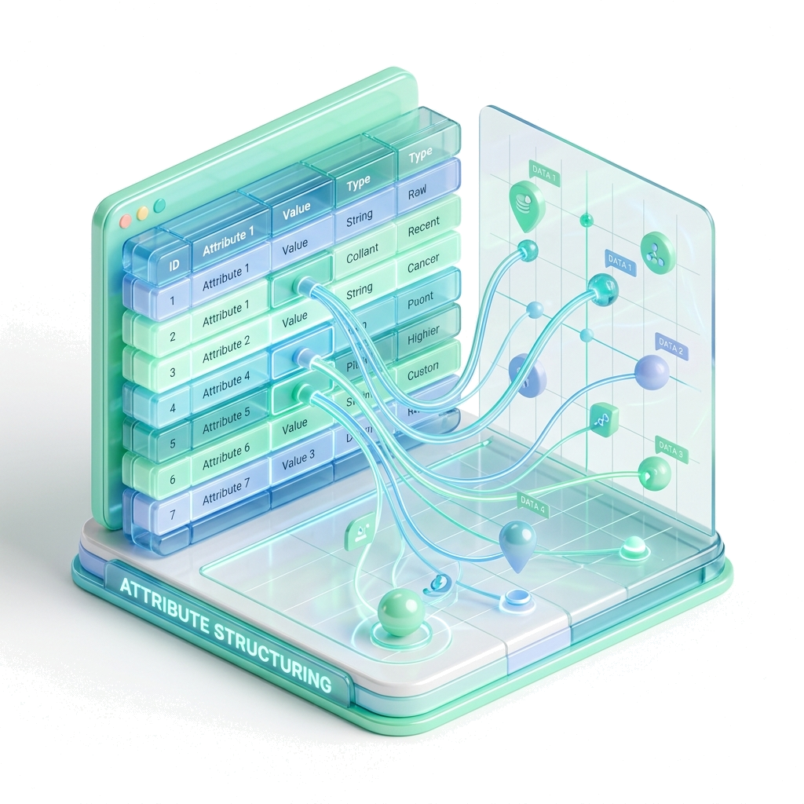
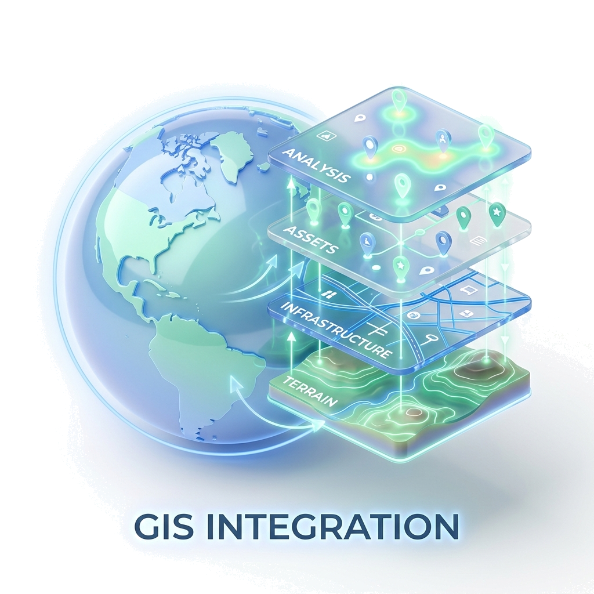
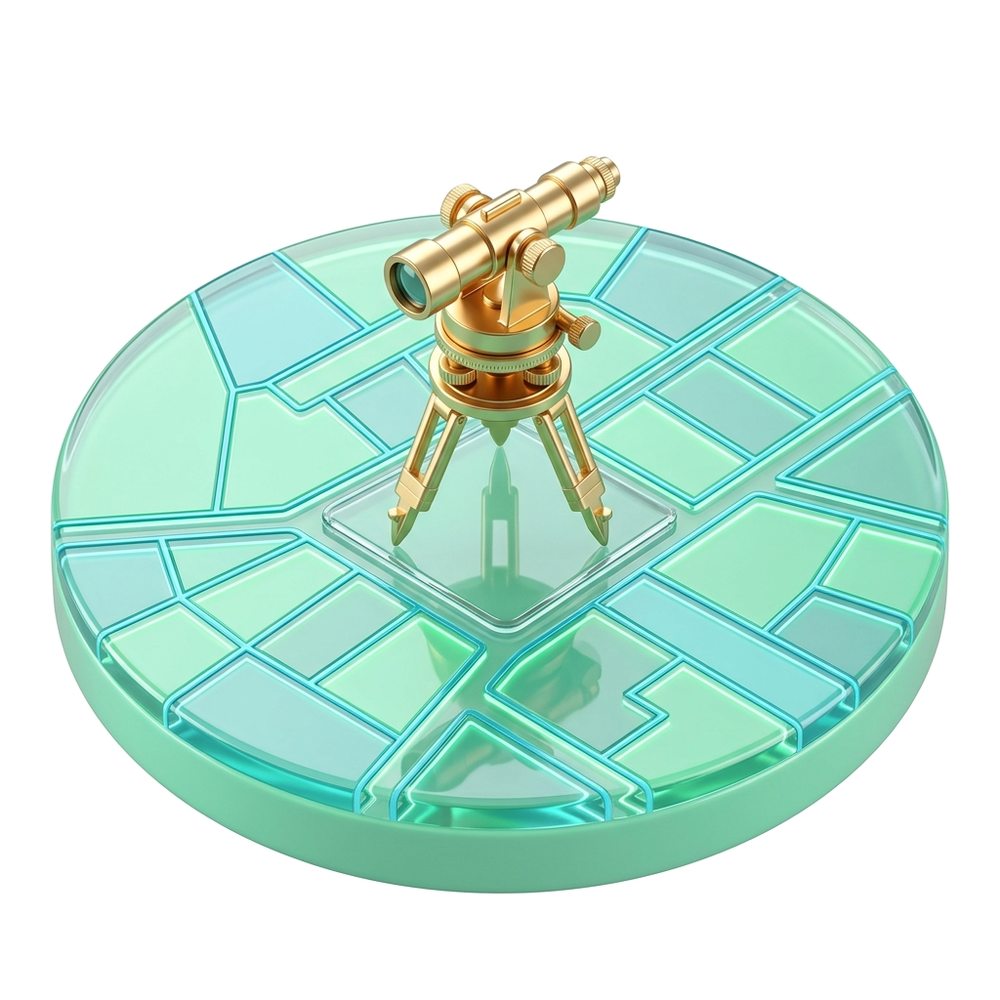
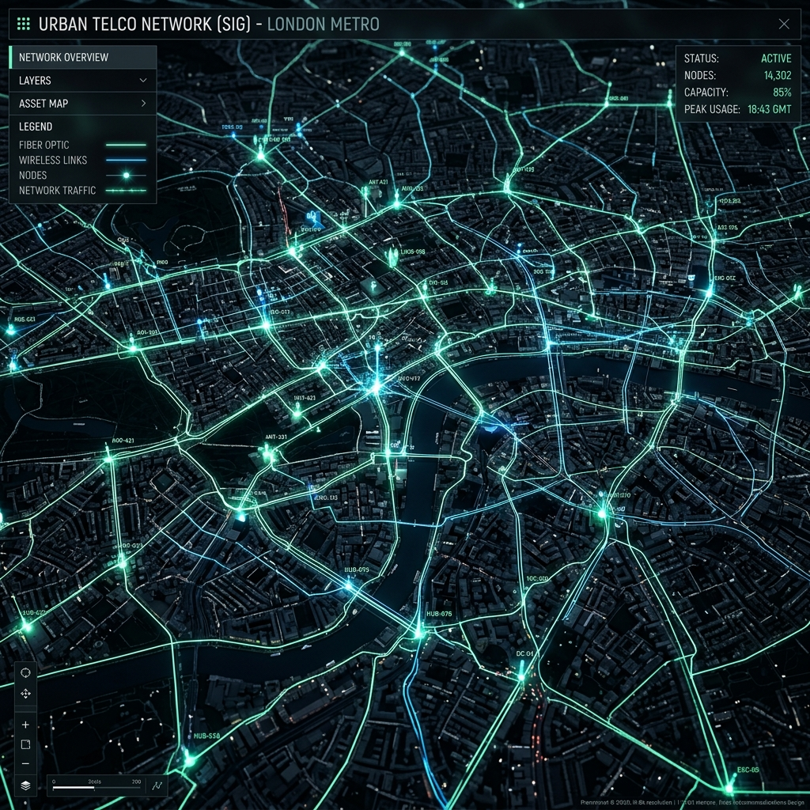

Ingénierie de Données Géospatiales
Valorisation du patrimoine réseau : de l'archive à l'intelligence territoriale.
La Vision
Dans un contexte de déploiement accéléré des infrastructures fibre (FTTH) et 5G au Maroc, la donnée géographique est devenue l'actif le plus précieux des opérateurs et des bureaux d'études. Pourtant, une grande partie de cette connaissance reste piégée dans des archives physiques ou des formats statiques difficiles à exploiter.
Notre mission est de transformer ce patrimoine documentaire en un système d'information géographique (SIG) dynamique, précis et immédiatement exploitable pour vos prises de décision stratégiques.
Notre Expertise
Nous intervenons sur la chaîne de valeur complète de la donnée, avec une exigence de précision chirurgicale :
Restructuration de données complexes
Traitement des plans réseaux dégradés ou anciens pour en extraire une structure propre.
Vectorisation Haute Précision
Conversion de vos actifs en formats vectoriels standards.

Structuration d'Attributs
Indexation et liaison des informations techniques directement aux objets géographiques.

Intégration SIG
Transposition des données nettoyées dans votre environnement SIG compatible outils métiers.

Cadastre & Foncier
Numérisation et structuration de plans cadastraux pour la gestion foncière.
Du plan papier rouillé au SIG vectoriel
Voyez par vous-même la métamorphose de vos archives en données géographiques structurées, prêtes à être exploitées dans Esri ArcGIS ou QGIS.

Compatible avec vos outils métiers
Pourquoi nous choisir ?
Précision et Fidélité
Chaque tracé est vérifié pour garantir une correspondance parfaite avec les plans sources, assurant ainsi la fiabilité des futures interventions sur le terrain.
Optimisation des Délais
Notre approche technique avancée nous permet de traiter des volumes importants d'archives dans des délais extrêmement courts, là où les méthodes traditionnelles de saisie manuelle s'essoufflent.
Une Donnée "Vivante"
Nous ne livrons pas de simples fichiers. Nous créons des structures de données conçues pour évoluer, permettant une maintenance simplifiée et une intégration fluide dans vos plateformes de gestion (Next.js, Dashboards).
Le Résultat : Une Clarté Opérationnelle
En digitalisant votre réseau, vous obtenez bien plus qu'une carte :
- ✓ Réduction des erreurs lors de la planification des travaux.
- ✓ Accélération de la réponse aux incidents réseau.
- ✓ Optimisation des coûts de maintenance préventive.
Collaborons ensemble
La transformation de vos archives commence par une démonstration concrète sur vos propres documents.
Demander une démonstration